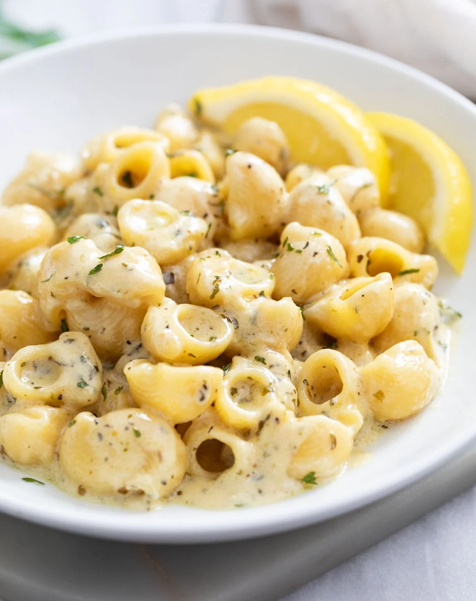

Recipe - Garlic Butter Pasta

Description
Easy 20-minute garlic butter pasta that goes so well with any dish! It’s super quick and easy to make, and it may seem so simple but it holds a ton of flavor!
Ingredients
- Seasonings
- ¾ teaspoon EACH: dried basil, oregano, parsley, mustard powder
- ¼ teaspoon EACH: dried thyme, onion powder, pepper
- Sauce/Pasta
- 4 tablespoons butter, divided
- 4 cloves fresh garlic, minced
- 2 ¾ cups chicken broth
- ¾ cup half and half
- 1 teaspoon soy sauce
- ½ chicken bouillon cube
- ¾ cup Parmesan cheese, freshly grated
- 2 tablespoons fresh lemon juice
- ½ lb. Shellbow pasta, see notes
Steps
- Combine the seasonings and set aside. Measure out remaining ingredients before beginning. This recipe goes quick, so you want to be ready.
- Add 3 tbsps. of the butter to a soup pot over medium heat. Add the garlic and seasonings. Stir continuously until the butter starts to foam.
- Add the chicken broth, half and half, soy sauce, and bouillon cube.
- Bring to a boil and add the pasta. Bring back to a gentle boil and cook uncovered according to package instructions. Run a silicone spatula along the bottom of the pot throughout cooking to lift any pasta that may be settling to the bottom. Taste-test the pasta for doneness before proceeding.
- Reduce heat to low and gradually stir in the Parmesan cheese. Remove from heat and add the lemon juice.
- Add the remaining 1 tablespoon of butter and cover the pot to let it melt. Gently stir it into the pasta and serve!